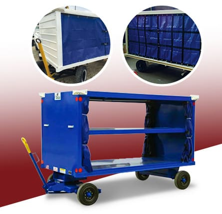

Made for the cart
Photograph the full cart and each opening, including the mounting points and closure. A labeled sketch helps the team distinguish the opening size from the requested finished curtain size.

Precision Tarp product photograph
MANUFACTURING & INSTALLATION / ELGIN, IL
Custom vinyl curtains for aviation baggage carts, made with reinforced webbing and attachment options for the cart opening.
Share the cart opening dimensions, number of curtains and existing attachment arrangement. Final measurements, hardware and production details need confirmation.
Prepare a product requestInclude dimensions with units, intended use and any existing equipment details. Final fit and price need confirmation.
Original product informationPhotograph the full cart and each opening, including the mounting points and closure. A labeled sketch helps the team distinguish the opening size from the requested finished curtain size.